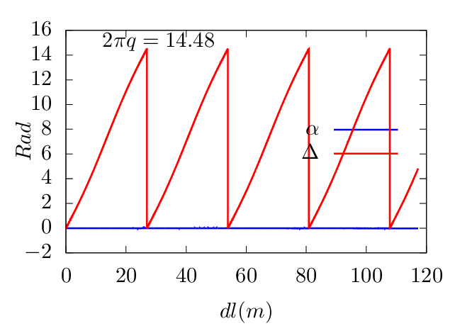
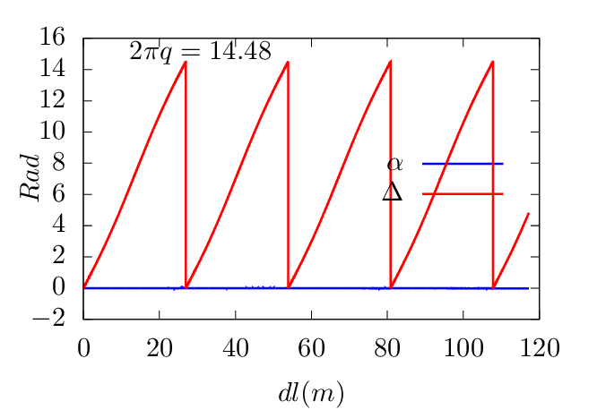

Figure 23: Left: Projection of a ï¬eld line on the poloidal plane. Right: the value of Δ and α
along the magnetic ï¬eld line. Here α is deï¬ned by α = ϕ − Δ, where ϕ is the usual cylindrical
toroidal angle and Δ = ∫
0𜃠d𝜃,
d𝜃,
d𝜃,